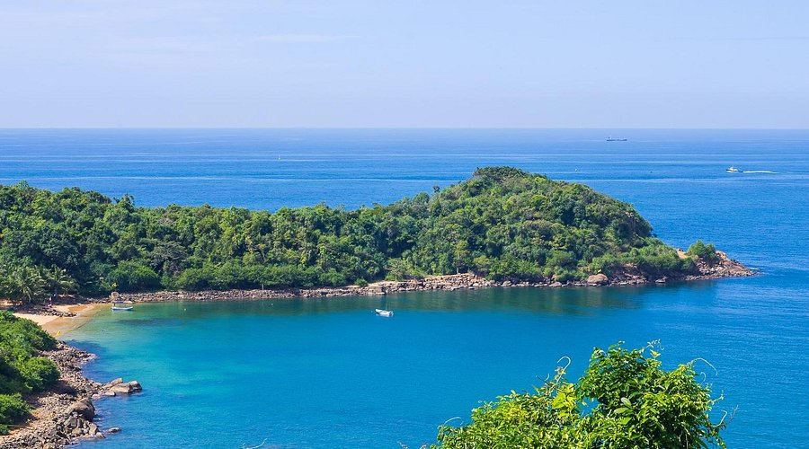

Key Attractions

The Galle Fort is a historic fortification offering cobblestone streets, colonial buildings, boutique shops, and stunning coastal views.

The Galle Lighthouse is iconic, providing panoramic ocean views and photo opportunities at the edge of the fort.

The fort walls at sunset provide a picturesque view over the ocean, ideal for photography and peaceful strolls.

Galle National Museum showcases Dutch colonial history, artifacts, and the rich cultural heritage of Galle and southern Sri Lanka.

Jungle Beach, a secluded cove near Galle, offers pristine sands, calm waters, and opportunities for snorkeling and relaxation.